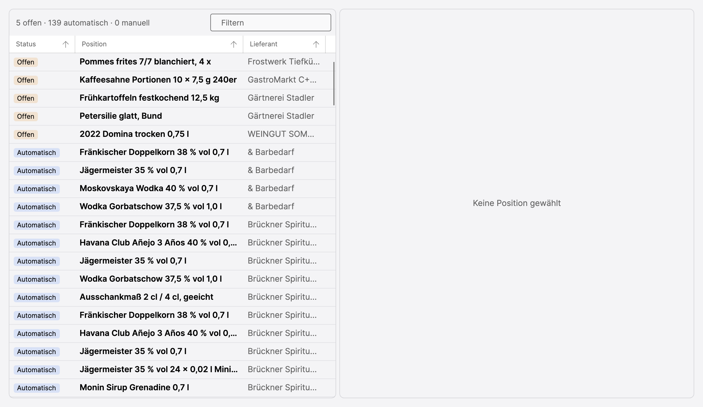
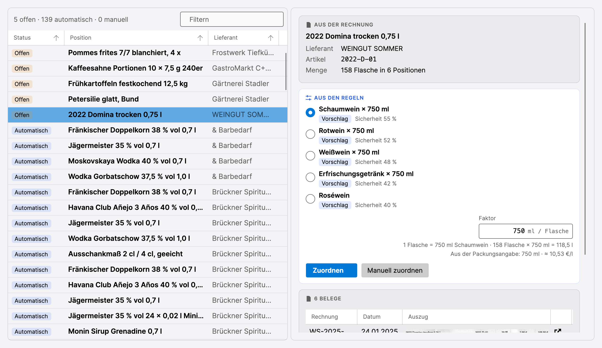
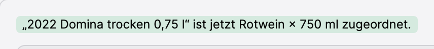
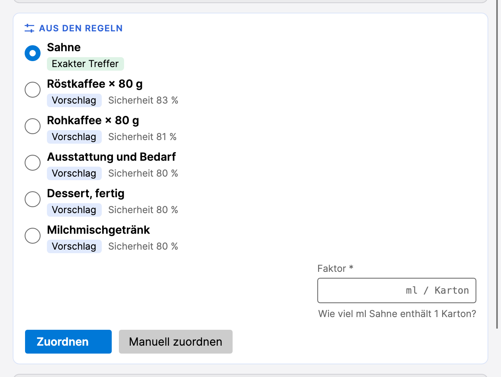
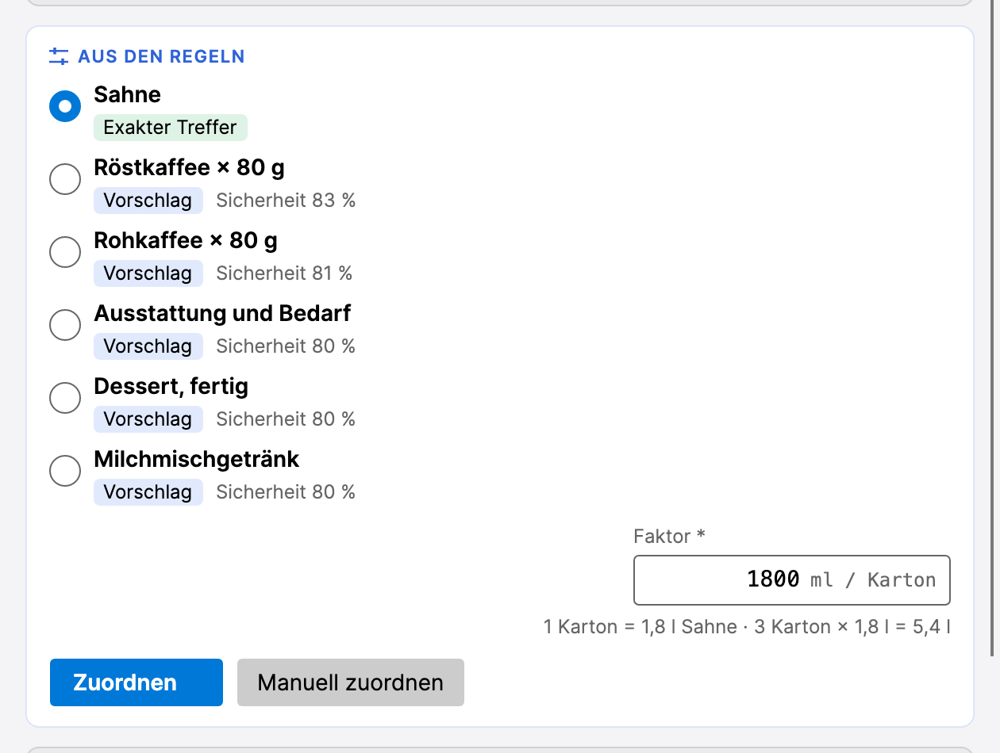
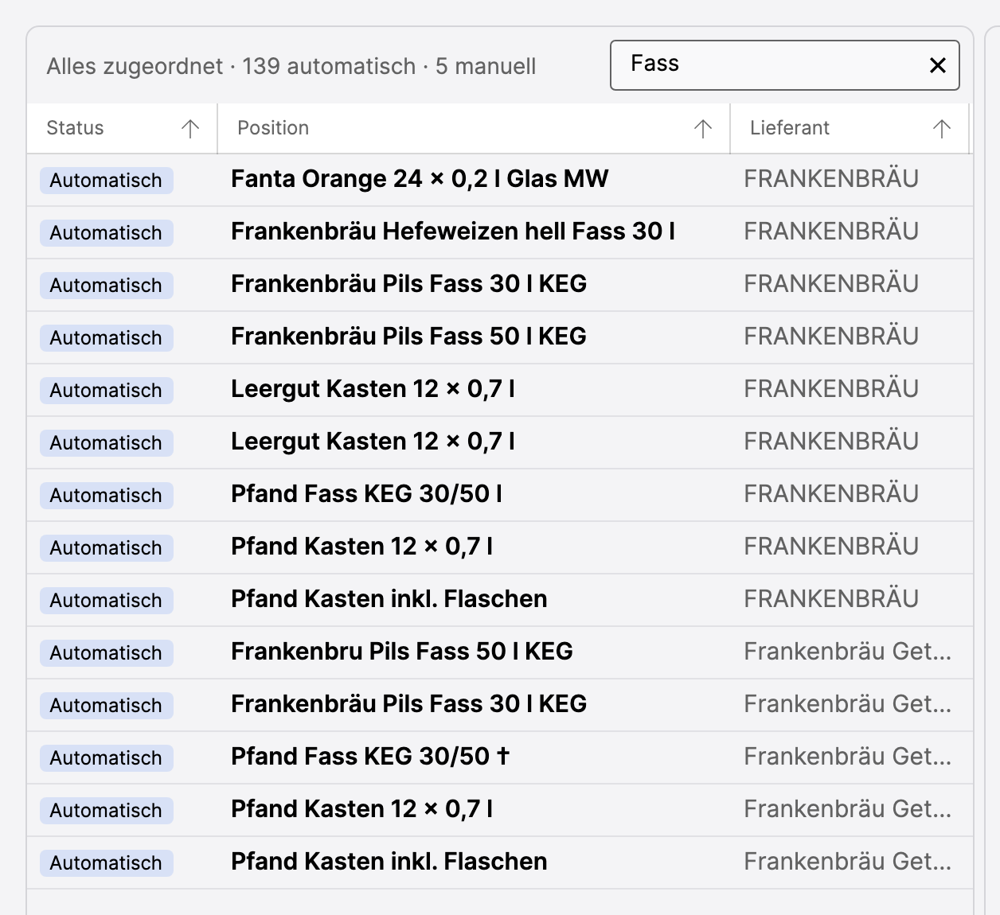
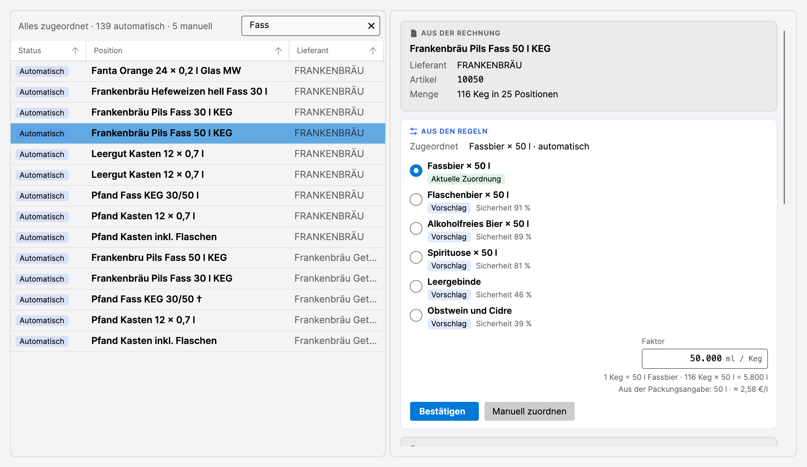
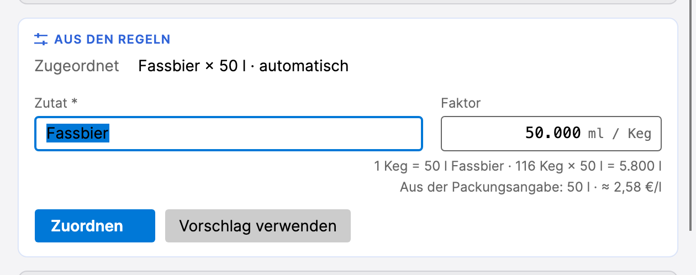
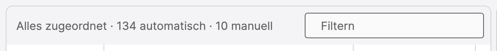

Zuordnung prüfen
Prüfung1. Rechnungen2. Zuordnung3. Sortiment4. Kalkulation5. Bericht
Eine Rechnung nennt die Ware so, wie der Lieferant sie nennt: „Frankenbräu Pils Fass 50 l KEG“. Die Kalkulation rechnet mit Zutaten: Fassbier. Die Zuordnung ist die Verbindung dazwischen. Beim Import hat das Programm sie für fast alle Positionen schon hergestellt. Auf diesem Reiter wird nachgeholt, was es nicht wusste, und stichprobenartig geprüft, ob es richtig lag.
Die Liste
Auf 2. Zuordnung wechseln. Links stehen alle Artikel der Prüfung, jeder einmal, auch wenn er auf 25 Rechnungen vorkommt. Die erste Spalte ist der Status:
- Offen: Das Programm war sich bei keiner Zutat sicher genug. Hier ist eine Entscheidung nötig.
- Automatisch: Das Programm hat zugeordnet, niemand hat es bestätigt.
- Manuell: Ein Mensch hat die Zuordnung gewählt oder bestätigt.
Die offenen Positionen stehen oben. Über der Liste steht die Bilanz, im
Beispiel 5 offen · 149 automatisch · 0 manuell.

Dieselbe Ware kann mehrmals in der Liste stehen, wenn der Scan den Namen oder den Lieferanten einmal anders gelesen hat, etwa „Frankenbru“ statt „Frankenbräu“. Jede Schreibweise ist für das Programm ein eigener Artikel und wird einmal zugeordnet.
Eine Position ansehen
Die Zeile 2022 Domina trocken 0,75 l anklicken. Rechts erscheint alles, was zu diesem Artikel bekannt ist:

- Aus der Rechnung: Name, Lieferant, Artikelnummer und die Gesamtmenge über alle Rechnungen, hier 158 Flaschen in 6 Positionen.
- Aus den Regeln: die Vorschläge des Programms mit einer Sicherheit in Prozent. Das Programm hält den Wein für Schaumwein, mit 55 % ist es sich aber nicht sicher, und Rotwein steht mit 51 % gleich dahinter. Genau deshalb ist die Position offen geblieben.
- Faktor: Das Rezept für ein Glas Rotwein rechnet in Millilitern, die Rechnung in Flaschen. Der Faktor sagt, wie viel in einem Gebinde steckt, hier 750 ml je Flasche. Das Programm hat ihn aus dem Artikeltext gelesen und rechnet darunter vor: 158 Flaschen × 750 ml = 118,5 l.
- Belege: die Rechnungszeilen, aus denen der Artikel stammt, als Ausschnitt des Scans. Ein Klick auf das Symbol rechts öffnet die Rechnung.
Ein Domina ist ein fränkischer Rotwein. Den Vorschlag Rotwein × 750 ml
anklicken und Zuordnen. Rechts oben bestätigt ein grüner Hinweis die
Zuordnung, die Zeile wandert in der Liste nach unten zu den manuellen
Zuordnungen, und die Bilanz zeigt 4 offen.

Die übrigen offenen Positionen
Nach demselben Muster die anderen vier. Bei zweien ist die Zutat klar, das Programm zeigt sie als Exakter Treffer, aber der Faktor fehlt: Aus „Karton“ oder „Bund“ lässt sich nicht lesen, wie viel drin ist. Das Feld Faktor ist dann mit einem Stern markiert, und darunter steht die Frage, die zu beantworten ist:

Die Antwort steht meist im Artikeltext: 240 Portionen zu 7,5 g sind rund
1,8 l je Karton, das Rezept rechnet Sahne in Millilitern. 1800 eintragen,
die Zeile darunter rechnet vor:

| Position | Vorschlag wählen | Faktor | Dann |
|---|---|---|---|
| Frühkartoffeln festkochend 12,5 kg | Kartoffeln × 12,5 kg (schon gewählt) | bleibt 12.500 |
Zuordnen |
| Kaffeesahne Portionen 10 × 7,5 g 240er | Sahne (schon gewählt) | 1800 eintragen |
Zuordnen |
| Petersilie glatt, Bund | Frische Kräuter (schon gewählt) | 30 eintragen, ein Bund wiegt etwa 30 g |
Zuordnen |
| Pommes frites 7/7 blanchiert, 4 x | Pommes frites (schon gewählt) | 10000 eintragen |
Zuordnen |
Bei den Pommes hat der Scan die Packungsangabe abgeschnitten, aus „4 × 2,5 kg“ wurde „4 x“. Was im Karton ist, zeigt der Beleg-Ausschnitt unten oder die gleichlautende Position des anderen Tiefkühllieferanten: 4 × 2,5 kg, also 10.000 g.
Mit jeder Zuordnung zählt die Bilanz herunter, bis dort Alles zugeordnet
steht.
Stichprobe: die Fässer
Automatisch heißt nicht richtig. Wer prüfen will, wo das Programm daneben liegt, fängt bei dem an, was den meisten Umsatz bringt. In einem Gasthaus ist das das Bier vom Fass.
In das Feld Filtern über der Liste Fass tippen. Übrig bleiben sieben
Artikel: fünf Fässer und zweimal Fasspfand, alle Automatisch. Die Fässer
stehen doppelt, weil der Scan den Lieferanten mal als „FRANKENBRÄU“ und mal
als „Frankenbräu Getränke-Fachgroßhandel GmbH“ gelesen hat.

Frankenbräu Pils Fass 50 l KEG anklicken. Das Programm hat das Fass als Flaschenbier zugeordnet, weil es „Pils“ aus den Regeln als Flaschenbier kennt. Für die Kalkulation ist das ein großer Unterschied: 116 Fässer zu 50 l sind 5.800 l Bier, die als Flaschenbier verkauft würden statt als Bier vom Fass.

Manuell zuordnen, als Zutat Fassbier wählen. Der Faktor bleibt bei
50.000 ml je Keg, das Programm hat ihn aus „50 l“ im Artikeltext gelesen:

Zuordnen. Dasselbe für die vier anderen Fässer: Frankenbräu Hefeweizen hell Fass 30 l, zweimal Frankenbräu Pils Fass 30 l KEG und das verlesene Frankenbru Pils Fass 50 l KEG. Bei allen bleibt der Faktor, wie er vorausgefüllt ist. Das Pfand bleibt, wie es ist; es ist kein Wareneinsatz und zählt in keiner Kalkulation mit.
Danach den Filter mit dem × wieder leeren. Eine bestätigte Zuordnung merkt sich das Programm: In der nächsten Prüfung mit Rechnungen von Frankenbräu ordnet es die Fässer gleich richtig zu.

Geschafft, wenn …
- über der Liste
Alles zugeordnet · 144 automatisch · 10 manuellsteht - nichts mehr Offen ist
Zum Nachlesen
Woher die Vorschläge kommen, was die Sicherheit bedeutet und wie mit Pfand, Fracht und anderem umgegangen wird, das kein Wareneinsatz ist, steht unter Zuordnung.
Weiter: 3. Sortiment Was das Gasthaus verkauft, und zu welchem Preis